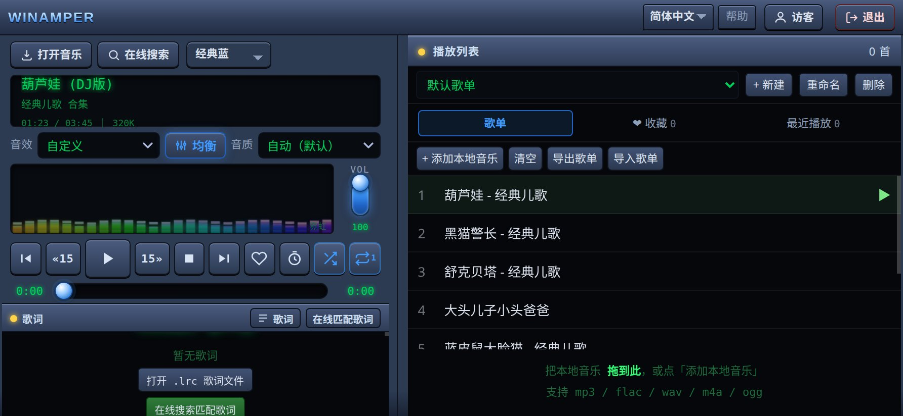
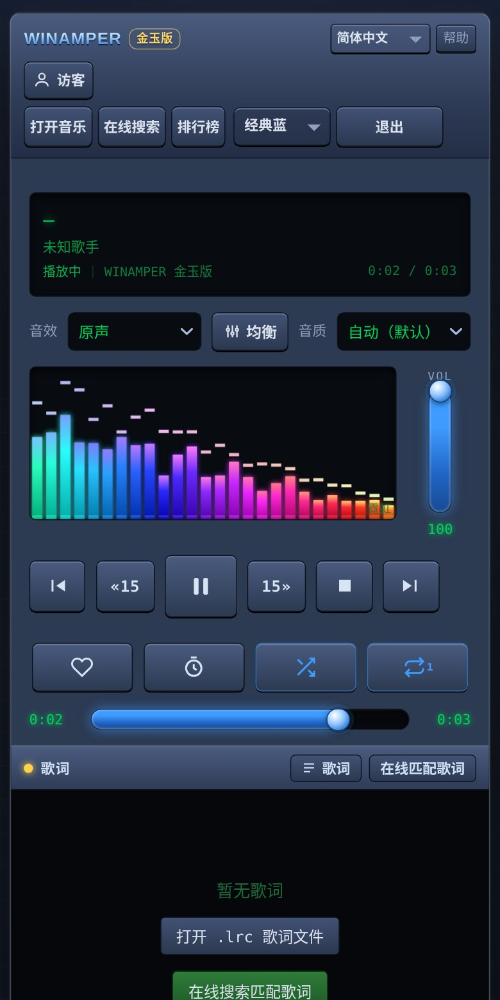
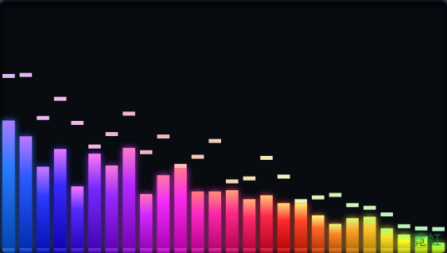
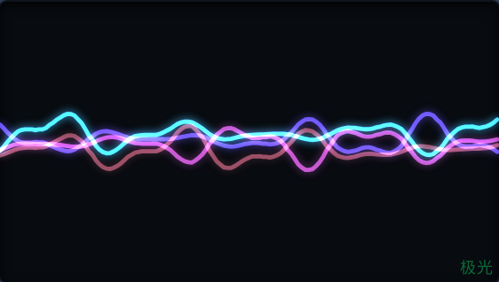
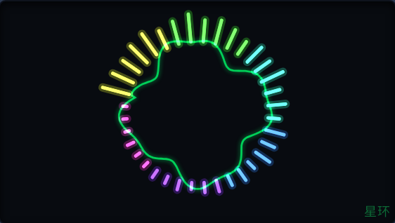
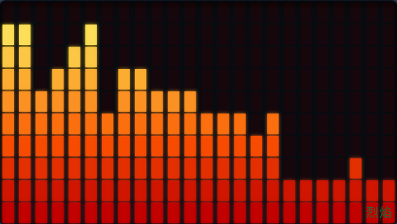
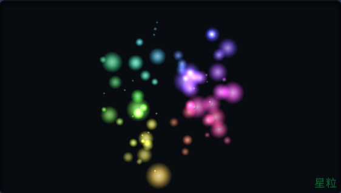
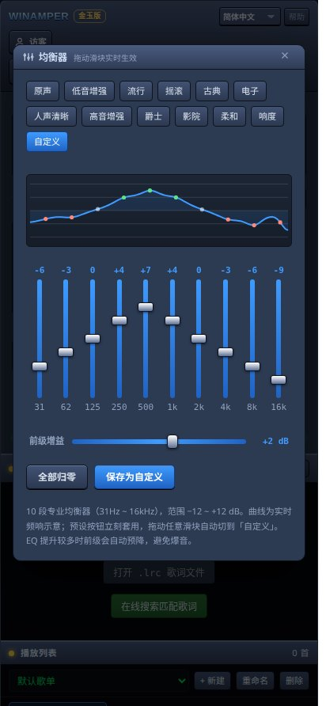
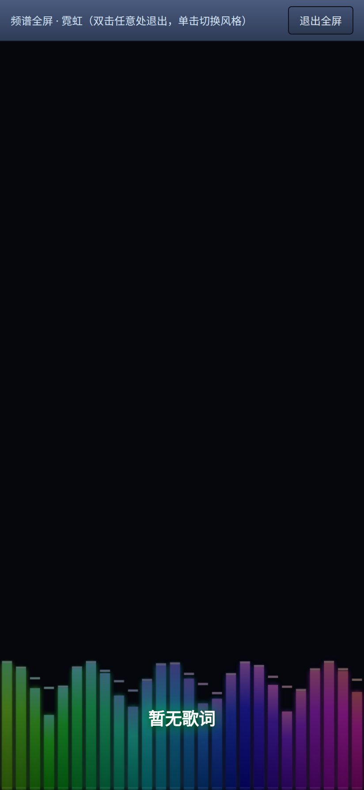

一款复古典型的轻量音乐播放器：网页里打开就能用，也可以装成安卓应用。本地音乐拖进来就播；在线歌曲内置接口候选池，失效自动换源；五种频谱可视化由真实分析器驱动，跟着鼓点走。


没有信息流，没有推荐算法，没有会员体系——打开就是一台播放器。
把文件拖进窗口就加入歌单，支持 mp3 / flac / wav / m4a / ogg，无损格式照常解码。
内置接口候选池，一个源失效自动切下一个；支持自定义接口与订阅清单，一次填好长期可用。
霓虹、极光、星环、烈焰、星粒——不是装饰动画，而是音频分析器的真实数据在驱动。
31Hz ~ 16kHz，预设一键套用，拖滑块实时生效；前级自动预降，大提升也不爆音。
在线匹配、本地 .lrc 挂载、全屏滚动歌词；时间线按住拖动、松手就跳到那一句。
每人一份歌单、头像、音效与外观设置，互不干扰；一键导出备份、换设备原样恢复。
设置、歌单、缓存都在浏览器本地存储里，不上传任何数据；在线歌可下载留存，听完就走。
在用户页「下载播放器文件」导出单文件 HTML，存进 U 盘或本机，断网照样放本地歌。
同一首歌，五种性格。以下均为播放器实际画面截图。





界面复刻 Winamp 的黄金年代，但每一处都按现在的触屏习惯重做过。


还有别的想问？到 GitHub 提个 issue 就行。
免费、无广告、无内购、无账号。代码公开在 GitHub，这是个人作品，图自己用着舒服，顺手分享。
全部存在你设备本地（浏览器存储 / 应用目录）：歌单、头像、缓存、设置都不上传，也没有任何统计SDK。换设备用「导出备份」文件迁移。
在线流是跨域资源，浏览器安全策略不允许它接入音频引擎；播放器会在后台把歌曲缓存成同源数据，完成后自动接上频谱与均衡器，不需要重新点一次。想立刻见效就把歌「下载」下来。
内置多个接口候选池，失败自动换源；右上「API源」面板可以添加自己的接口地址或订阅清单，可用的会记住。
下载 APK 后直接打开，系统会提示允许「安装未知来源应用」，允许一次即可。应用不申请多余权限。